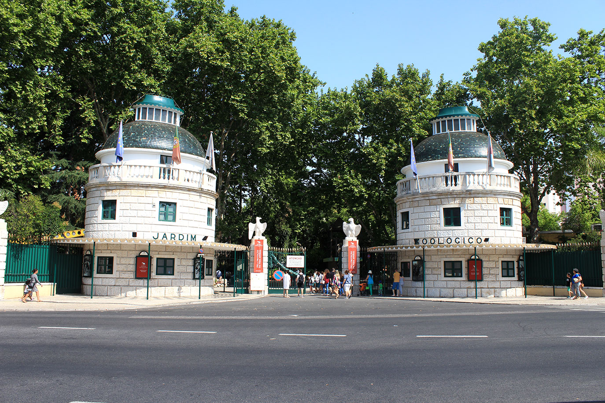

O Jardim Zoológico de Lisboa
Bem-vindos ao Jardim Zoológico de Lisboa
Visita o site oficial do ZOO!
Vem conhecer os Animais do Zoo:
- Anfíbios e Outros
- Aves
- Mamíferos
- Répteis

Vem ver os espetáculos:
- Baía dos golfinhos
- Bosque Encantado
- Pelicanos
- Reptilário
- Teleférico
- Comboio do Zoo
- Tapada do Lince-ibérico
- Templo dos Primatas
- Vale dos Tigres
- Quintinha do Lidl
- Savana MEO